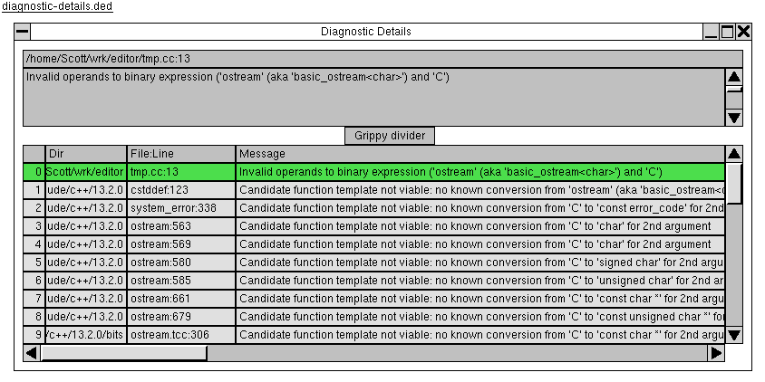

The "Diagnostic Details" dialog allows the user to review the details of one compiler diagnostic.
This dialog is modeless, meaning other windows can be raised and interacted with while it is still open.
For the purpose of this dialog, a diagnostic is a non-empty sequence of
(dir, file, line,
message) tuples, where dir is an absolute
path, file is the file name within that directory,
line is a non-negative integer, and message is
a string that can be fairly long (hundreds of characters and
occasionally more than 1000).

The dialog is divided vertically into two panels, separated by a "grippy" control that can move the panel divider up and down. Initially, the upper panel is 200 pixels high and the lower is 400 pixels high. The initial dialog width is 800 pixels.
The top panel shows the currently selected diagnostic element. It contains, top to bottom:
dir+file), a colon, then the
line number.
message. The
text is wrapped at word boundaries, and has a vertical scrollbar
(but no horizontal scrollbar).
Both of the above controls fill the width of the dialog.
The bottom panel shows the entire list of elements in a table that fills with width of the dialog. The columns of the table are:
QTableWidget provides this column
implicitly, including numbering, as its "vertical header".)
dir, right-aligned such that the
rightmost portion of the path is visible when the column is
not wide enough to see all of it (which is normally the case). It
is initially 100 pixels wide.
file and line, separated by a colon. The text is
left-aligned. The column is initially 150 pixels wide.
message, left-aligned. This column's size is set to
be large enough to show the widest message in the table. This may
mean the column is much wider than the table viewport.
This table can be scrolled both horizontally and vertically. Both scrollbars are always shown, and both scroll with pixel granularity rather than row/column granularity.
The table column widths can be changed by the user by clicking and dragging the divider between the header row cells.
One entire table row is selected at a time; it does not allow multiple rows to be selected, and does not select individual cells within a row. Whenever the selected row changes, the upper panel display changes to show the details of the selected element.
The table is the only element that can receive keyboard focus. The table reacts to keypresses as follows:
Summary of hotkeys: